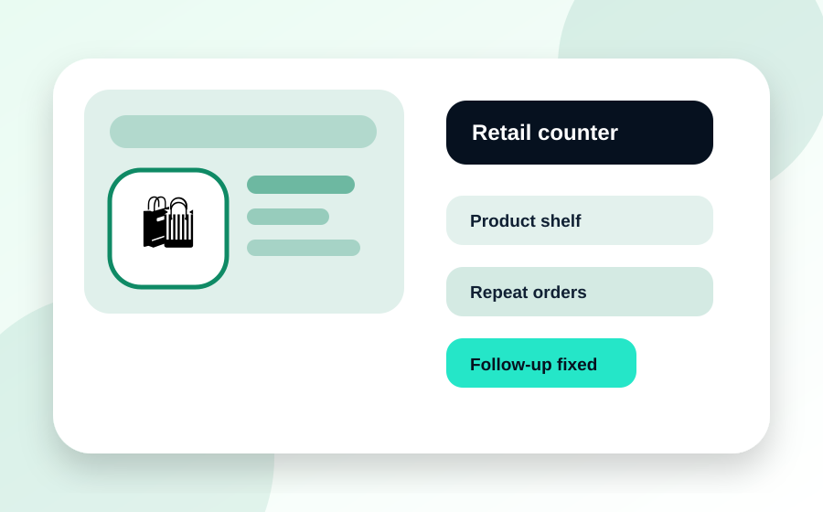

🛍️Stock question
Offer follow-up
Repeat order
Retail & Ecommerce
Stop losing customers because product questions are answered late.
Useful for stores, D2C brands and local sellers getting enquiries from WhatsApp, Instagram and Google.
Product FAQ repliesOrder enquiry captureRepeat offer reminders
Outcome: faster replies, fewer lost enquiries, more repeat orders.
See retail automation ideas →